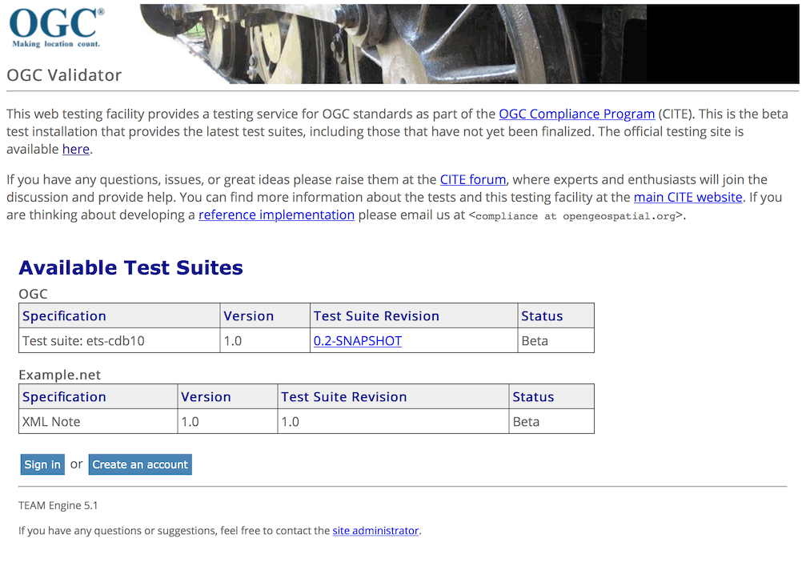

How to Deploy to TEAM Engine
TEAM Engine is a Java web application for running OGC conformance tests with a web interface. It supports the installation of multiple test suites, and stores the results of past test runs. It can also be ran from the command line, although you may want to run the tests using the test suite command line JAR interface instead.
OGC provides an online version of TEAM Engine for public use, however this is not useful for CDB users as the CDB cannot be uploaded over HTTP due to either security/privacy concerns or requiring too much bandwidth. Instead, a local installation of TEAM Engine can be installed that can test CDBs located on the same machine or network.
Installing TEAM Engine
There is an installation guide which works if you follow the steps and versions exactly. It covers instructions for Windows and Linux/UNIX users.
If you want to use a newer version of Apache Tomcat, you must use an updated version of the context.xml for Tomcat webapps; I have one that I have tested to work.
If you want the short version of the TEAM Engine installation guide:
- Install Oracle JDK 8
- Install Apache Tomcat 7 or newer (see note above about context.xml)
- Create a base directory for Team Engine, and set the TE_BASE Java property for Tomcat to point to that directory
- (Optional) Install Tomcat native and Apache Portable Runtime if you want to support newest versions of TLS and HTTP/2
- Checkout TEAM Engine from GitHub
- Install latest Apache Maven
- Use Maven to compile TEAM Engine
- Extract TEAM Engine console base archive and TEAM Engine console binaries to TE_BASE
- Checkout ETS Resources from GitHub
- Use Maven to compile ETS Resources
- Extract ETS Resources binaries/libraries to TE_BASE
- Use Maven to create WAR file for TEAM Engine
- Install TEAM Engine WAR file in Tomcat
- Install TEAM Engine common libraries to Tomcat library directory
- (Optional) Install replacement Tomcat context.xml for TEAM Engine
Tomcat should be up and running on port 8080, and TEAM Engine should be accessible under the /teamengine path. If you have any issues, check the Tomcat log files (usually in the logs/catalina.out file) for errors and warnings.
Install ETS-CDB10
By default TEAM Engine will include a sample test suite, but we need to install the CDB test suite. Use git to checkout the repository from GitHub:
$ git clone https://github.com/opengeospatial/ets-cdb10.git
Then use maven to build the package:
$ cd ets-cdb10 $ mvn install
Extract the TEAM Engine CTL scripts from target/ets-cdb10-0.5-SNAPSHOT-ctl.zip into the TE_BASE/scripts/ directory. The scripts directory should look like this:
scripts/ cdb10 note
Next install the CDB10 ETS dependencies from target/ets-cdb10-0.5-SNAPSHOT-deps.zip by unpackaging ets-cdb10-0.5-SNAPSHOT-deps.zip and then copying all of the jar files to the /WEB-INF/lib folder of teamengine webapp.
It is possible a duplicate SLF4J library is installed into TEAM Engine. If the file TE_BASE/lib/slf4j-log4j12-1.7.6.jar exists, delete it. If you do not then TEAM Engine will not start.
Now we need to create a config.xml file for TEAM Engine to read the new test suite. Create the file TE_BASE/config.xml with the following contents:
<?xml version="1.0" encoding="UTF-8"?>
<config>
<scripts>
<organization>
<name>OGC</name>
<standard>
<name>Test suite: ets-cdb10</name>
<version>
<name>1.0</name>
<suite>
<namespace-uri>http://www.opengis.net/cite/cdb10</namespace-uri>
<prefix>tns</prefix>
<local-name>ets-cdb10-0.5-SNAPSHOT</local-name>
<title>Test suite ets-cdb10</title>
<description>Describe scope of testing.</description>
</suite>
<revision>
<name>0.5-SNAPSHOT</name>
<status>Beta</status>
<sources>
<source>cdb10/1.0/ctl</source>
</sources>
<webdir>cdb10/1.0/site</webdir>
</revision>
</version>
</standard>
</organization>
</scripts>
</config>
(If you have other test suites you want to enable, then they also need to be included in this XML file by placing them as an additional /config/scripts/organisation/standard element i.e. there should be only one organisation in the script)
Next make sure Tomcat has read access to TE_BASE. On Linux/UNIX you can make TE_BASE readable by all users.
$ sudo chmod -R +r TE_BASE
Now reload Tomcat and TEAM Engine should include ETS CDB10 as a test suite.
